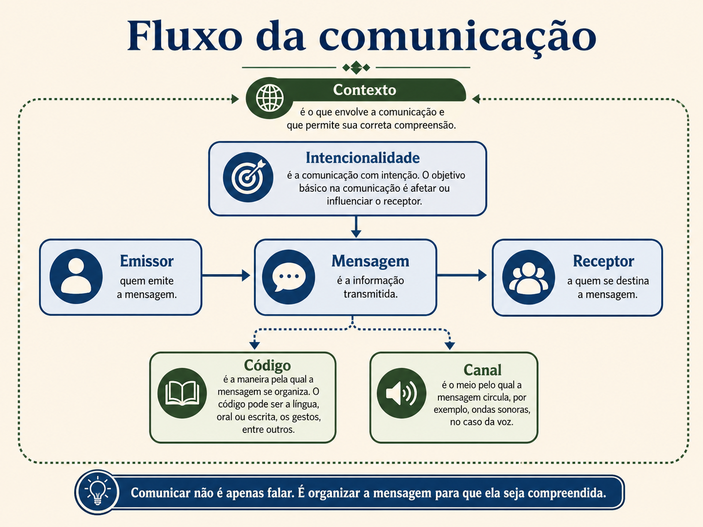
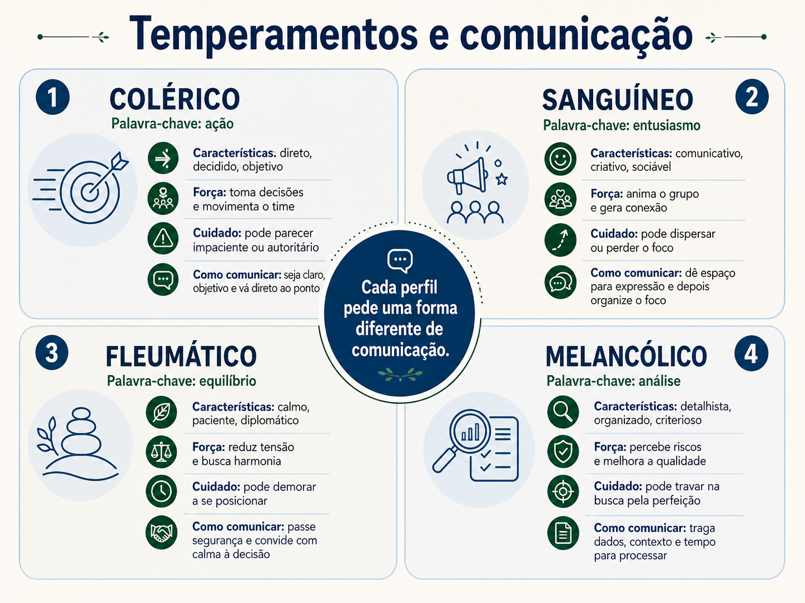

Comunicação, clareza e liderança
Uma conversa sobre como a mensagem sai de uma pessoa, chega em outra, ganha interpretação no caminho e pode virar direção, ruído, conflito ou alinhamento.
Bom dia, pessoal. Vamos começar por uma situação simples, daquelas que acontecem em qualquer equipe, em qualquer empresa, em qualquer grupo de trabalho. Alguém manda uma mensagem no chat dizendo: preciso disso rápido.
Quem recebe a mensagem para por alguns segundos e pensa: rápido quanto? Hoje? Em uma hora? Até o fim da semana? Antes da reunião? Imediatamente? A pessoa que escreveu talvez ache que foi clara, porque na cabeça dela o prazo estava óbvio. Só que o prazo estava óbvio apenas para ela. Para quem recebeu, ficou aberto.
Esse exemplo parece pequeno, mas ele mostra uma parte enorme dos problemas de comunicação. Muitas vezes o problema não está na falta de boa vontade, nem na falta de capacidade técnica. O problema está na diferença entre o que uma pessoa quis dizer e o que a outra pessoa conseguiu entender.
Quando falamos de comunicação na liderança, não estamos falando de falar bonito, usar palavras difíceis ou parecer mais inteligente na reunião. Comunicação boa é aquela que ajuda o outro a entender o que precisa ser feito, por que aquilo importa, até quando precisa acontecer, qual cuidado deve existir e como confirmar se o entendimento está correto.
Não. Falar bonito pode até impressionar por alguns minutos, mas não garante entendimento. Comunicação boa é aquela que reduz confusão. É aquela que faz a pessoa sair da conversa sabendo qual é o próximo passo. Uma fala simples, direta e respeitosa costuma funcionar melhor do que uma fala cheia de enfeite, mas sem direção.
Pense em um restaurante. Você chama a pessoa que está atendendo e diz: quero um prato bem leve. Isso pode significar salada para uma pessoa, peixe grelhado para outra, pouca comida para outra, comida sem gordura para outra. Agora, se você diz: quero um prato sem fritura, com legumes e uma proteína grelhada, fica mais fácil. A comunicação ficou mais clara porque saiu do campo da impressão e foi para o campo do combinado.
Na liderança acontece a mesma coisa. Quando uma pessoa lidera, formalmente ou informalmente, ela usa a comunicação para dar direção. E direção não é mandar por mandar. Direção é ajudar o time a enxergar para onde ir, o que priorizar, o que evitar, o que precisa ser entregue e qual é o sentido daquela ação.
Uma liderança pode ter domínio técnico, conhecer ferramentas, entender processos e ter experiência. Mesmo assim, se não conseguir comunicar com clareza, o time pode se perder. A pessoa pode até saber muito, mas o conhecimento fica preso nela. Liderança não é só saber. Liderança também é conseguir transformar o que sabe em orientação compreensível para outras pessoas.

Agora vamos olhar para a comunicação como se fosse um caminho. De um lado existe quem fala ou escreve. No meio existe a mensagem. Do outro lado existe quem recebe. Quem fala é chamado de emissor. A mensagem é o conteúdo que sai dele. Quem recebe é chamado de receptor. Essas palavras parecem técnicas, mas são simples. Emissor é quem envia. Mensagem é o que foi enviado. Receptor é quem recebe.
Para que serve entender isso? Serve para lembrar que comunicação não termina quando eu aperto enviar. Ela só começa ali. A mensagem ainda precisa chegar, ser lida, ser escutada, ser interpretada e virar ação. Se qualquer parte desse caminho falhar, o resultado pode mudar.
Como usar isso no dia a dia? Antes de enviar uma mensagem importante, nós podemos fazer uma pausa curta e perguntar: quem vai receber isso tem contexto suficiente? Eu expliquei o que precisa ser feito? Existe prazo? Existe critério? Existe motivo? Existe algum risco de a pessoa entender de outro jeito?
Essa pausa curta evita muitos problemas. Em projeto, em atendimento, em liderança, em reunião com cliente, em conversa com fornecedor, em conversa familiar, muita coisa melhora quando a pessoa que comunica assume a responsabilidade de ser clara.
E aqui entra um ponto importante. A responsabilidade pela clareza é principalmente de quem comunica. Isso não significa que quem recebe não tem responsabilidade nenhuma. Quem recebe também pode perguntar, confirmar e pedir detalhe. Mas a primeira responsabilidade é de quem enviou a mensagem, porque foi essa pessoa que escolheu as palavras, o canal, o momento e a forma.
Vamos pensar em uma porta. Se eu chego em uma sala e digo: fecha isso aí, talvez a pessoa nem saiba do que estou falando. Pode ser a porta, a janela, o notebook, a planilha, o sistema. Agora, se eu digo: por favor, fecha a porta da sala, porque o barulho do corredor está atrapalhando a reunião, a chance de entendimento aumenta muito. Eu deixei claro o que é, para que serve e como agir.
O mesmo vale para uma mensagem de trabalho. Dizer: verifica aquele relatório, é pouco. Dizer: por favor, verifica se o relatório de status de abril está com os dados atualizados até ontem, porque ele será usado na reunião das 15h, já ajuda muito mais. A pessoa sabe o que olhar, sabe por que importa e sabe o prazo.
Se está escrito, fica mais fácil acompanhar.
Se fica implícito, mora ali uma parte do risco.
Implícito é aquilo que não foi falado claramente, mas ficou subentendido. O problema é que cada pessoa entende o implícito de um jeito. Para uma pessoa, “me manda logo” significa até o fim do dia. Para outra, significa agora. Para outra, significa antes da próxima reunião. Por isso, quanto mais importante for a entrega, menos espaço a gente deve deixar para adivinhação.
Quando a comunicação fica vaga, aparecem ruídos. Ruído é tudo aquilo que atrapalha a mensagem. Pode ser barulho de verdade, como uma obra do lado da sala. Pode ser distração, como alguém tentando ouvir uma reunião enquanto responde mensagens. Pode ser falta de contexto, como receber um pedido sem saber o motivo. Pode ser linguagem confusa, como usar siglas que a pessoa não conhece.
Ruído também pode ser emocional. Uma pessoa que está cansada, preocupada ou irritada pode interpretar uma frase de forma mais dura do que ela realmente foi enviada. Uma mensagem curta no chat pode parecer grosseria, mesmo que a pessoa só estivesse com pressa. Uma pergunta simples pode parecer cobrança, se quem recebe já está se sentindo pressionado.
Além do ruído, existem os vieses. Viés é uma tendência de interpretação. É como se a nossa cabeça usasse experiências anteriores para completar o que não está claro. Se alguém já teve um líder muito controlador, pode interpretar uma pergunta de acompanhamento como desconfiança. Se alguém já recebeu críticas duras em público, pode interpretar um convite para conversa como ameaça. Se alguém está acostumado com mensagens secas, pode achar normal responder de forma curta demais.
Viés não é necessariamente má intenção. Muitas vezes é só uma lente. A pessoa olha para a situação com base no que viveu, no que teme, no que espera ou no que acredita. Por isso, duas pessoas podem ouvir a mesma frase e reagir de formas diferentes.
Imagine uma mensagem assim: você consegue me ligar quando puder? Para uma pessoa, isso é tranquilo. Para outra, pode gerar ansiedade. Ela pode pensar que fez algo errado, que existe uma reclamação, que vai receber uma cobrança. A frase não explica o assunto. O espaço vazio é preenchido pela imaginação.
Uma forma melhor seria: você consegue me ligar quando puder para alinharmos o relatório de amanhã? Não é nada urgente, só quero combinar o formato antes de enviar. Perceba a diferença. A segunda mensagem tira peso emocional, dá contexto e reduz interpretação errada.
É por isso que comunicação estratégica não é apenas falar. É pensar no efeito da mensagem antes de enviar. Estratégica, aqui, significa intencional, pensada, conectada a um objetivo. Não é manipulação. É cuidado com a clareza.
Outro ponto que muda muito a comunicação é o canal. Canal é o meio usado para transmitir a mensagem. Pode ser conversa presencial, reunião por vídeo, ligação, áudio, chat, e-mail, documento, gravação, planilha, card em ferramenta ou até um emoji.
Para que serve escolher bem o canal? Serve para combinar a importância da mensagem com a forma mais adequada de transmitir. Nem tudo precisa virar reunião. Nem tudo pode ser resolvido por chat. Nem tudo precisa de documento longo. O canal certo reduz ruído, economiza tempo e melhora a chance de entendimento.
Como usar isso na prática? Antes de comunicar algo, nós podemos perguntar: essa mensagem é simples ou delicada? Precisa de registro? Precisa de conversa ao vivo? Precisa de decisão rápida? Precisa envolver emoção? Precisa deixar evidência para consultar depois?
Uma mensagem simples, como confirmar um horário, pode ir por chat. Uma decisão importante que precisa ficar registrada pode ir por e-mail ou documento. Um conflito, uma conversa sensível ou uma crítica delicada dificilmente deve começar por texto seco. Nesses casos, uma conversa por vídeo ou presencial costuma reduzir mal-entendido, porque a pessoa percebe tom de voz, expressão e intenção.
Existe uma escala bastante útil, conhecida como escala de canais de comunicação de Ambler. A ideia é simples: alguns canais carregam mais contexto humano e permitem mais troca; outros carregam menos contexto, mas ajudam no registro. O canal mais rico costuma ser a conversa cara a cara, especialmente quando as pessoas olham para a mesma coisa, como uma lousa, um desenho, um fluxo, um protótipo ou uma tela compartilhada. O canal mais pobre, em termos de interação humana, costuma ser um registro distante, como documentação detalhada sem conversa.
Isso não significa que documentação seja ruim. Pelo contrário. Documentação é essencial quando precisamos de persistência, ou seja, quando a informação precisa ficar registrada para ser consultada depois. A questão é que uma documentação sozinha pode não resolver uma conversa difícil. E uma conversa sem registro pode desaparecer da memória das pessoas.
| Canal | Quando ajuda mais | Cuidado |
|---|---|---|
| Cara a cara com desenho ou tela compartilhada | Quando o assunto é complexo e precisa de construção conjunta. | Registrar depois o que foi decidido. |
| Conversa presencial ou por vídeo | Quando existe sensibilidade, dúvida, conflito ou necessidade de alinhamento. | Não deixar a conversa sem próximos passos. |
| Telefone ou áudio | Quando a troca precisa ser rápida e o texto pode gerar ruído. | Registrar o combinado ao final. |
| Chat ou e-mail | Quando a mensagem precisa de agilidade ou registro simples. | Evitar tom seco em assuntos delicados. |
| Documentação | Quando a informação precisa ficar disponível para consulta. | Não usar documento como substituto de alinhamento quando há muita dúvida. |
Na prática, o melhor caminho muitas vezes combina canais. Por exemplo, uma conversa rápida por vídeo para alinhar um problema, seguida de um resumo por escrito com o que foi combinado. Assim, a conversa traz humanidade e o registro traz controle. Nós não escolhemos canal por costume. Escolhemos canal pelo risco da mensagem.
Vamos pensar em um banco. Se o aplicativo manda uma notificação dizendo apenas “ação necessária”, isso pode assustar. A pessoa não sabe se é fraude, bloqueio, atualização, pagamento, documento ou cobrança. Agora, se a mensagem diz “confirme seu acesso até amanhã para manter sua chave de segurança atualizada”, ela fica mais clara. O canal pode ser o mesmo, mas a qualidade da mensagem mudou.
Qualidade da comunicação não é quantidade de palavras. Uma mensagem longa pode ser ruim. Uma mensagem curta pode ser excelente. A qualidade está na adequação. Adequação é ajustar a mensagem ao público, ao objetivo e ao momento.
Público é quem recebe. Objetivo é o resultado que a comunicação precisa gerar. Momento é o contexto em que a pessoa vai receber aquilo. Uma mesma mensagem pode funcionar para um colega técnico e não funcionar para um cliente. Pode funcionar em uma conversa interna e não funcionar em um comitê. Pode funcionar em um grupo pequeno e não funcionar em uma apresentação executiva.
Porque a informação pode ser a mesma, mas a necessidade de quem recebe muda. Um time técnico talvez precise saber causa, detalhe, dependência e solução. Uma liderança talvez precise saber impacto, risco, prazo e decisão necessária. Um cliente talvez precise entender o valor, o cuidado e a segurança da condução. Comunicar bem não é falar tudo do mesmo jeito para todo mundo. É entregar a informação certa, com o nível de detalhe certo, para a pessoa certa.
Agora entra uma parte importante da liderança. Muitas vezes, quando a pessoa está sob pressão, ela sai da comunicação intencional e entra na comunicação reativa. A comunicação reativa é aquela que nasce no impulso. A pessoa lê algo, se irrita e responde na hora. Recebe uma cobrança e devolve outra. Sente medo e manda uma mensagem atravessada. Fica ansiosa e pressiona o time sem explicar o contexto.
Comunicação intencional é diferente. Ela não significa demorar horas para responder tudo. Significa respirar o suficiente para escolher uma resposta melhor. A pessoa percebe o impulso, organiza o fato, entende o objetivo e escolhe o canal mais adequado. Às vezes a resposta pode ser rápida. A diferença é que ela não sai desgovernada.
Imagine que alguém escreve no chat: esse relatório está errado. Uma resposta reativa poderia ser: errado por quê? Você nem explicou. Isso já cria tensão. Uma resposta intencional poderia ser: me ajuda a entender qual parte você identificou como incorreta? Assim eu consigo revisar com precisão. Perceba que a segunda resposta não abaixa a cabeça, não concorda automaticamente e não entra em briga. Ela puxa a conversa para o fato.
Essa capacidade de não reagir de qualquer jeito tem relação com temperança. Temperança é uma palavra que pode parecer antiga, mas a ideia é bem prática. Temperança é equilíbrio. É a capacidade de não deixar a emoção comandar tudo sozinha. Não é ausência de emoção. A pessoa continua sentindo. A diferença é que ela não entrega o volante da conversa para o impulso.
Para que serve a temperança na comunicação? Serve para manter a conversa no caminho certo, especialmente quando existe pressão, cobrança, atraso, cliente insatisfeito, conflito ou cansaço. Sem temperança, a pessoa pode ser agressiva, irônica, fria demais ou omissa. Com temperança, ela consegue ser firme sem destruir a relação.
Como usar a temperança? Começa com pequenas pausas. Ler antes de responder. Trocar “você sempre” por “nesta situação”. Trocar “isso está péssimo” por “precisamos ajustar este ponto”. Trocar “ninguém faz nada” por “o combinado não foi cumprido e precisamos entender o motivo”. A temperança aparece na escolha da palavra, do tom, do canal e do momento.
Voltando. Quando pensamos em comunicação, é muito fácil imaginar apenas reuniões importantes, conversas com cliente ou apresentações grandes. Mas a comunicação de uma liderança é construída no cotidiano. Cotidiano é o dia a dia mesmo, a rotina comum, a mensagem simples, a reunião curta, o pedido rápido, o jeito de responder quando alguém erra, a forma de explicar uma prioridade.
É nesse cotidiano que os hábitos aparecem. Hábito é aquilo que a gente repete tantas vezes que começa a fazer quase no automático. Se eu tenho o hábito de responder no impulso, em momentos de pressão isso vai aparecer. Se eu tenho o hábito de perguntar antes de concluir, isso também aparece. Se eu tenho o hábito de registrar combinados, a equipe passa a ter mais clareza.
Virtude é um comportamento bom que vai sendo treinado até ficar mais estável. Não é talento mágico. Não é algo que a pessoa tem ou não tem para sempre. Uma pessoa pode desenvolver escuta, paciência, presença, coragem comunicativa, humildade intelectual e imparcialidade.
Humildade intelectual significa reconhecer que eu posso não ter todas as respostas. Para que serve? Serve para o líder perguntar mais e afirmar menos quando ainda não tem informação suficiente. Como usar? Em vez de dizer “isso aconteceu porque vocês não se organizaram”, pode dizer “quero entender o que aconteceu antes de concluir”.
Paciência não é deixar tudo passar. Paciência é não atropelar a conversa. Para que serve? Serve para ouvir melhor, explicar melhor e evitar reação desproporcional. Como usar? Respirar antes de responder, deixar a pessoa terminar a frase, confirmar o entendimento e só então direcionar.
Coragem comunicativa é a capacidade de falar o que precisa ser falado, sem fugir do assunto. Para que serve? Serve para não deixar problema crescer no silêncio. Como usar? Chamando a conversa no momento adequado, com fato, respeito e objetivo claro.
Presença é estar de verdade na conversa. Para que serve? Serve para a outra pessoa perceber que está sendo ouvida. Como usar? Fechar outras telas quando possível, olhar para a pessoa, não digitar enquanto ela fala, fazer perguntas ligadas ao que ela acabou de dizer.
Imparcialidade é separar gosto pessoal de análise. Para que serve? Serve para não favorecer alguém por afinidade e não prejudicar alguém por antipatia. Como usar? Olhando para fatos, combinados e evidências antes de tomar uma decisão.


Agora vamos trazer isso para uma situação de liderança. Uma pessoa do time entrega um relatório sem a validação final. O cliente percebe o erro e reclama. A reação mais rápida talvez seja mandar uma mensagem dura: você não validou de novo, assim fica impossível. Essa frase pode até mostrar irritação, mas não ajuda muito. Ela acusa, generaliza e não mostra caminho.
Uma forma mais intencional seria: o relatório enviado hoje saiu sem validação final e o cliente percebeu a divergência. Isso gera retrabalho e afeta nossa credibilidade. Preciso que, nos próximos envios, a base seja conferida antes do compartilhamento ou que você sinalize quando os dados ainda estiverem em conferência.
Essa fala é mais clara porque traz o fato, mostra o impacto e indica o comportamento esperado. Fato é o que aconteceu. Impacto é a consequência. Comportamento esperado é o que precisa mudar ou se repetir. Não precisa atacar a pessoa para tratar o problema.
Perceba que isso também vale para elogio. Um elogio genérico como “boa” é agradável, mas ensina pouco. Um reconhecimento mais claro seria: a forma como você explicou o risco na reunião ajudou o cliente a entender a decisão. Continue trazendo o impacto de negócio antes dos detalhes técnicos. Aqui a pessoa entende o que fez bem e consegue repetir.
Comunicação estratégica também ajuda a evitar dependência excessiva da liderança. Quando tudo fica na cabeça de uma pessoa, o time depende dela para decidir, lembrar e interpretar. Quando as expectativas são claras e os combinados ficam registrados, a equipe ganha mais autonomia. Autonomia, aqui, não significa largar as pessoas sozinhas. Significa dar clareza suficiente para que elas consigam agir com responsabilidade.
Vamos pensar em uma casa. Se uma pessoa diz “arruma a sala”, isso pode significar muitas coisas. Guardar brinquedos, passar pano, tirar copos, organizar almofadas, varrer, limpar a mesa. Agora, se ela diz “guarda os copos na cozinha, coloca as almofadas no sofá e tira os brinquedos do chão antes da visita chegar”, o pedido fica mais executável. No trabalho, o mesmo princípio vale para tarefas, projetos, reuniões e entregas.
Quanto menos experiência a pessoa tem, mais clareza ela precisa. Um profissional iniciante pode não conhecer atalhos, siglas, histórico do cliente, expectativa da liderança ou critérios de qualidade. Se o líder fala de forma genérica demais, o iniciante pode até querer acertar, mas não sabe como. Comunicação clara também é inclusão, porque permite que pessoas com menos contexto participem melhor.
Isso não quer dizer que tudo precisa ser explicado eternamente do mesmo jeito. Conforme a pessoa ganha repertório, a comunicação pode ficar mais objetiva. Mas, no começo de uma relação, de um projeto ou de uma atividade nova, clareza nunca é exagero. Ela evita retrabalho.
Também precisamos cuidar da comunicação quando existe diferença de área. Uma pessoa de tecnologia pode usar uma linguagem muito técnica. Uma pessoa de negócio pode falar em impacto, cliente, receita, prazo, risco. Uma pessoa de operação pode falar em fila, atendimento, volume, rotina. Cada área tem seu jeito de enxergar o mundo. Quando uma área fala como se a outra tivesse a mesma cabeça, o ruído aparece.
Por isso, uma boa prática é traduzir. Traduzir não é simplificar demais a ponto de distorcer. É explicar de um jeito que o outro consiga usar. Se eu digo “houve instabilidade na integração”, talvez uma pessoa não técnica não entenda. Se eu digo “o sistema que envia os dados para outra plataforma falhou por alguns minutos, por isso parte das informações não apareceu no relatório”, fica mais claro.
A Arte da Facilitação aparece como uma boa referência para pensar em encontros, conversas, decisões e participação. Facilitar, aqui, não significa fazer tudo pela equipe. Significa criar condições para que a conversa tenha objetivo, ordem, escuta, registro e encaminhamento.
Essa indicação conversa diretamente com o que estamos praticando. Um líder que facilita bem uma conversa não deixa tudo solto. Ele ajuda o grupo a entender o assunto, organiza as falas, separa o que é dúvida do que é decisão, registra combinados e fecha próximos passos. Facilitação é comunicação colocada a serviço de um resultado.
Agora, uma parte importante: comunicar também envolve perguntar se a mensagem chegou. Muitas pessoas acham que confirmar entendimento é desconfiança. Não é. Confirmar entendimento é cuidado.
Em vez de perguntar “entendeu?”, que muitas vezes gera apenas um “sim”, podemos perguntar de um jeito melhor: só para alinharmos, qual vai ser o próximo passo? Ou então: me confirma como você entendeu o prazo e o formato? Ou ainda: tem alguma parte que ficou aberta para você?
Essas perguntas reduzem risco. Se a pessoa entendeu errado, o erro aparece antes da execução. É muito mais barato corrigir entendimento no começo do que corrigir entrega pronta no final.
Também é importante lembrar que comunicação não é só palavra. O tom de voz, a expressão do rosto, a postura, o silêncio e o tempo de resposta também comunicam. Se uma pessoa diz “está tudo bem” com tom irritado, talvez a mensagem real não pareça tão bem assim. Se o líder diz que está aberto a ouvir, mas interrompe toda frase, a equipe aprende que a abertura é apenas discurso.
Na comunicação escrita, o tom é mais difícil de perceber. Por isso, mensagens curtas demais podem parecer secas. Não precisamos escrever textos enormes para tudo, mas em assuntos sensíveis vale colocar um pouco mais de contexto. Um “ok” pode resolver uma confirmação simples. Mas, depois de alguém compartilhar uma dificuldade, talvez um “ok” sozinho pareça descaso.
Vamos comparar duas respostas. A pessoa diz: estou com dificuldade para fechar a análise porque a base veio incompleta. Resposta 1: ok. Resposta 2: entendi, obrigado por avisar. Verifica qual campo está faltando e me manda um exemplo até 14h para eu te ajudar a destravar. A segunda resposta orienta. A primeira apenas confirma que a mensagem foi vista.
A liderança precisa tomar cuidado com aquilo que normaliza. Se normaliza mensagem vaga, o time aprende a trabalhar com adivinhação. Se normaliza cobrança sem contexto, o time trabalha com medo. Se normaliza combinado sem registro, o time depende de memória. Se normaliza clareza, confirmação e registro, o time começa a operar com mais segurança.
Comunicação também precisa considerar o objetivo. Antes de falar, vale perguntar: eu quero informar, pedir, decidir, alinhar, corrigir, reconhecer, negociar ou ouvir? Cada objetivo pede uma postura diferente. Se quero ouvir, não posso entrar falando sem parar. Se quero corrigir, preciso trazer fatos. Se quero decidir, preciso deixar claro quais opções existem. Se quero reconhecer, preciso mostrar o comportamento que gerou valor.
Uma frase simples pode ajudar antes de conversas importantes: qual resultado essa conversa precisa produzir? Se a resposta for “preciso sair com um combinado”, a conversa deve caminhar para decisão. Se a resposta for “preciso entender o que aconteceu”, a conversa deve começar com escuta. Se a resposta for “preciso comunicar um risco”, a conversa deve trazer fato, impacto e alternativa.
Quando a pessoa não sabe o objetivo da própria mensagem, ela tende a misturar assuntos. Começa falando de prazo, passa para comportamento, puxa uma reclamação antiga, cita outra pessoa, lembra de uma reunião passada e termina sem encaminhamento. Isso cansa quem ouve e reduz a chance de ação.
Por isso, uma ideia por vez ajuda muito. Primeiro esclarecemos o fato. Depois explicamos o impacto. Depois fazemos o pedido. Depois confirmamos o entendimento. Essa sequência não precisa parecer robótica. Ela pode ser natural, mas precisa existir.
Vamos montar uma fala simples. “Percebi que a atualização do status não foi enviada ontem. Isso deixou a gestão sem informação para a reunião da manhã. Para evitar esse risco, preciso que o status seja enviado toda terça até 17h, mesmo que seja para dizer que não houve mudança. Pode confirmar se esse horário funciona para você?”
Essa fala tem clareza. Ela não diz “você é desorganizado”. Ela mostra uma situação. Ela explica o efeito. Ela pede um comportamento. Ela confirma se existe condição real para cumprir.
Repare também que a comunicação clara não precisa ser fria. Dá para ser humano e objetivo ao mesmo tempo. Aliás, uma comunicação respeitosa costuma ser mais objetiva, porque não perde tempo com ataque, ironia ou julgamento. Ela vai ao ponto sem esmagar a pessoa.
Se a equipe percebe que o líder corrige sem humilhar, pergunta antes de concluir, registra combinados e explica contexto, a confiança cresce. Confiança não nasce de discurso bonito. Nasce da repetição de comportamentos coerentes. A pessoa confia porque vê o padrão se repetir.
Isso também se conecta ao desenvolvimento pessoal. Uma pessoa que quer melhorar a comunicação pode começar observando pequenos sinais. Eu interrompo muito? Eu respondo no impulso? Eu registro combinados? Eu explico o motivo dos pedidos? Eu adapto minha fala ao público? Eu confirmo entendimento? Eu escolho bem o canal? Eu deixo o outro falar?
Esse diagnóstico não serve para culpa. Serve para ponto de partida. Ninguém melhora uma comunicação que não observa. Quando a pessoa começa a perceber o próprio padrão, consegue escolher micro-práticas.
Micro-prática é uma ação pequena, repetida no cotidiano. Por exemplo: antes de enviar pedidos importantes, revisar se existe prazo. Antes de responder uma mensagem irritante, esperar dois minutos. Ao final de reunião, escrever três combinados. Em conversas difíceis, trocar julgamento por fato. Em pedidos para pessoas novas, explicar o motivo da tarefa.
Essas pequenas ações parecem simples, mas constroem maturidade. A comunicação de uma liderança não muda apenas com uma grande palestra. Ela muda quando a pessoa treina, no dia a dia, um jeito mais claro, mais responsável e mais humano de conduzir conversas.
Agora, vamos transformar essa conversa em prática individual. Como a página é a aula, a reflexão abaixo foi pensada para ser feita sozinho, com calma. A resposta escondida não é a única resposta possível. Ela é apenas uma referência para comparar o raciocínio.
Reflexão 1
Pense na mensagem: “preciso que você resolva isso logo”. Reescreva essa mensagem deixando claro o que precisa ser feito, o prazo, o motivo e como a pessoa deve confirmar o entendimento.
Ver uma possibilidade de resposta
Uma resposta possível seria: “Preciso que você revise o relatório de status do projeto até hoje às 15h, conferindo se os dados de prazo, risco e pendências estão atualizados. Esse relatório será usado na reunião com a liderança às 16h. Quando terminar, me envie uma mensagem confirmando que a revisão foi feita ou sinalizando qualquer ponto que ainda precise de validação.”
Essa versão funciona melhor porque tira a palavra “logo” do campo da interpretação. Ela mostra a ação, o prazo, o motivo e a forma de confirmação.
Reflexão 2
Imagine que você precisa tratar um erro delicado cometido por uma pessoa do time. Escolha o canal mais adequado entre chat, e-mail, ligação, vídeo ou conversa presencial. Explique por que escolheu esse canal e qual registro faria depois.
Ver uma possibilidade de resposta
Uma possibilidade seria escolher vídeo ou conversa presencial, porque o assunto é delicado e envolve tom, escuta e cuidado com a relação. Depois da conversa, o registro poderia ser feito por escrito, com os combinados principais: o que aconteceu, qual ajuste foi combinado, qual prazo de acompanhamento e qual apoio será oferecido.
O ponto importante é combinar humanidade com registro. A conversa ajuda a reduzir ruído emocional. O registro ajuda a evitar esquecimento.
Reflexão 3
Pense em uma situação em que uma pessoa respondeu no impulso e piorou a conversa. Reescreva a resposta de forma mais intencional, sem fugir do problema e sem atacar a pessoa.
Ver uma possibilidade de resposta
Situação: alguém escreve “esse material está ruim”. Uma resposta impulsiva seria: “ruim por quê? Você nem explicou direito”. Uma resposta mais intencional seria: “me ajuda a entender quais pontos precisam de ajuste? Se você conseguir indicar as partes com maior problema, eu reviso com mais precisão e devolvo uma versão corrigida.”
A resposta intencional não ignora o problema. Ela pede clareza e puxa a conversa para o fato.
Reflexão 4
Observe sua comunicação no dia a dia e responda para si mesmo: em quais momentos você costuma deixar coisas implícitas? Em quais situações você usa o canal errado? Em quais conversas você tende a reagir rápido demais?
Ver uma possibilidade de resposta
Uma pessoa pode perceber, por exemplo, que deixa prazos implícitos quando pede tarefas rápidas, usa chat para assuntos que precisariam de conversa e responde de forma curta quando está sob pressão. A partir disso, uma micro-prática possível seria revisar mensagens importantes antes de enviar, escolher vídeo para assuntos sensíveis e registrar combinados ao final de reuniões.
A ideia não é encontrar culpa. É encontrar um ponto pequeno de melhoria que possa ser praticado já na rotina.
Para fechar esta conversa, fica uma imagem simples. Comunicação não é só o que sai da nossa boca ou do nosso teclado. Comunicação é o caminho inteiro entre intenção, mensagem, canal, interpretação e ação. Quando esse caminho fica mais claro, a liderança fica mais segura. Quando esse caminho fica cheio de implícitos, a equipe passa a trabalhar com adivinhação.
O ponto de partida é pequeno: explicar melhor o pedido, escolher melhor o canal, confirmar entendimento, registrar o que importa e pausar antes de reagir. Essas atitudes não tornam a comunicação perfeita, mas diminuem muito o espaço para ruído, viés, retrabalho e conflito desnecessário.